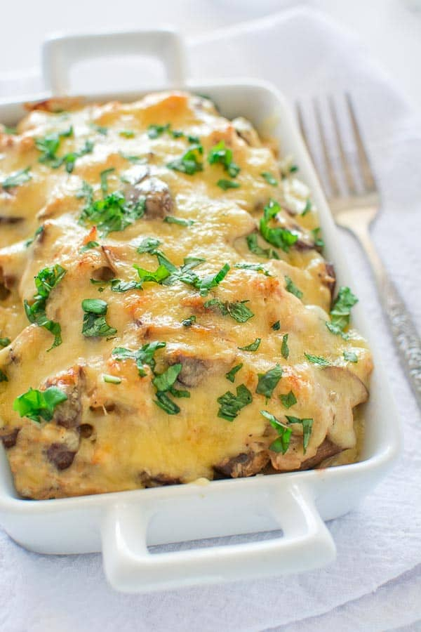

Chicken and Mushroom Julienne

Description
A dish of French cuisine - chicken julienne (julienne) with mushrooms. Very tasty, cooks quickly and easily. A chicken dish with champignons, in a creamy sauce - for every day, and also perfectly suits the festive table.
Ingredients
- 2 tbsp butter
- 1 medium chopped onion
- 1 lb chopped mushrooms
- 1 lb cooked and chopped chicken breast
- 1 cup cheese (mozzarella, cheddar or your favorite kind)
- Salt and pepper
Steps
- In a large skillet, saute the onions in butter for a few minutes.
- Add the mushrooms to the onions and cook for about 5 minutes, until they start to brown and the liquid starts to evaporate.
- Add the chicken, salt and pepper to the pan and stir everything together.
- Transfer the chicken-mushroom mixture into an oven-safe dish.
- Preheat the oven to 450F.
- To prepare the sauce, melt the butter on medium heat and add the flour.
- Cook the flour in butter for 1 minute and add milk (or cream).
- Keep cooking the sauce for 2-3 minutes, stirring continuously and trying to break up the lumps.
- Pour the sauce onto the chicken-mushroom mixture and stir everything together. Sprinkle generous amount of cheese on top and bake for about 15 minutes.
- Garnish with chopped fresh basil or parsley.